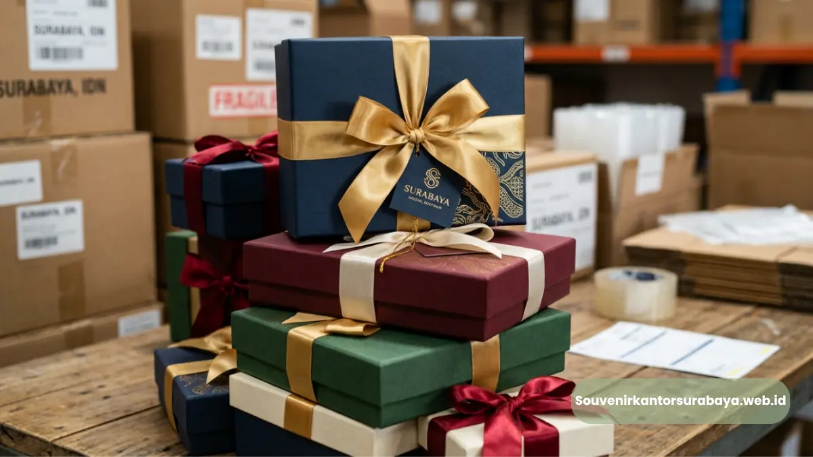

Cari souvenir acara kantor di Surabaya yang elegan, sesuai anggaran, dan siap kirim tepat waktu.
- Apa Itu Souvenir Acara Kantor?
- Mengapa Perusahaan di Surabaya Sering Mencari Souvenir Acara Kantor?
- Bagaimana Cara Menentukan Souvenir Acara Kantor yang Tepat?
- Apa Saja Jenis Souvenir Acara Kantor yang Paling Diminati?
- Apa Kesalahan Umum saat Mencari Souvenir Acara Kantor?
- Tips Memastikan Souvenir Acara Kantor Berkesan
Cari souvenir acara kantor di Surabaya yang elegan, sesuai anggaran, dan siap kirim tepat waktu bukan perkara sulit jika Anda tahu ke mana harus mencari. Souvenirkantorsurabaya.web.id menyediakan berbagai pilihan souvenir korporat siap custom logo untuk seminar, gathering, hingga acara akhir tahun perusahaan.
- Souvenir acara kantor mencakup produk fungsional seperti alat tulis, tumbler, hingga hampers korporat
- Pemilihan souvenir sebaiknya mempertimbangkan anggaran, jumlah tamu, dan pesan branding perusahaan
- Custom logo membuat souvenir acara kantor lebih berkesan dan memperkuat identitas perusahaan
- Pemesanan lebih awal membantu proses produksi dan pengiriman berjalan lebih lancar
- Souvenirkantorsurabaya.web.id menyediakan solusi lengkap untuk kebutuhan souvenir acara kantor di Surabaya
Apa Itu Souvenir Acara Kantor?
Souvenir acara kantor adalah barang yang dibagikan perusahaan kepada karyawan, klien, atau tamu undangan pada momen tertentu seperti seminar, rapat kerja, atau perayaan internal. Fungsinya tidak sekadar sebagai kenang-kenangan, tetapi juga sebagai media branding yang mengingatkan penerima pada perusahaan dalam jangka panjang.
Di lingkungan korporat, souvenir acara kantor umumnya dipilih berdasarkan tiga pertimbangan utama: kepraktisan penggunaan sehari-hari, kesan visual yang mencerminkan citra perusahaan, dan kesesuaian dengan anggaran acara.
Produk seperti notebook, tumbler, flashdisk, hingga paket alat tulis menjadi pilihan populer karena mudah digunakan oleh siapa saja tanpa terikat jenis industri.
Perusahaan di Surabaya, sebagai salah satu pusat bisnis terbesar di Jawa Timur, memiliki kebutuhan souvenir acara kantor yang terus berkembang seiring tingginya frekuensi seminar, pelatihan, dan pertemuan bisnis lintas instansi.
Mengapa Perusahaan di Surabaya Sering Mencari Souvenir Acara Kantor?
Perusahaan di Surabaya rutin mencari souvenir acara kantor karena kota ini menjadi pusat aktivitas bisnis, seminar, dan pertemuan korporat yang intens sepanjang tahun. Kebutuhan ini muncul dari berbagai jenis acara di lingkungan kerja.
Beberapa alasan utama perusahaan mencari souvenir acara kantor secara rutin antara lain:
- Frekuensi acara seminar dan pelatihan internal yang tinggi di sektor perbankan, manufaktur, dan jasa
- Kebutuhan menjaga hubungan baik dengan klien melalui pemberian souvenir bernilai
- Dorongan untuk memperkuat identitas visual perusahaan lewat merchandise custom logo
- Budaya apresiasi karyawan yang semakin umum diterapkan perusahaan modern
Selain itu, banyak instansi pemerintah dan lembaga pendidikan di Surabaya juga rutin menyelenggarakan acara formal yang membutuhkan souvenir sebagai bagian dari protokol acara resmi.
Bagaimana Cara Menentukan Souvenir Acara Kantor yang Tepat?
Cara menentukan souvenir acara kantor yang tepat adalah dengan menyesuaikan jenis produk pada tujuan acara, jumlah penerima, dan anggaran yang tersedia agar hasilnya optimal. Proses ini sebaiknya dilakukan sejak tahap perencanaan acara.
Berikut faktor yang perlu dipertimbangkan saat menentukan souvenir acara kantor:
Tujuan dan Jenis Acara
Souvenir untuk seminar biasanya berbeda dengan souvenir untuk gathering internal. Seminar cenderung membutuhkan barang yang mendukung aktivitas belajar seperti notebook, pulpen, atau map folder, sementara gathering lebih cocok dengan barang bernuansa apresiasi seperti tumbler atau hampers.
Jumlah Penerima dan Anggaran
Jumlah tamu undangan memengaruhi jenis produk yang bisa dipilih. Untuk acara berskala besar, produk dengan harga satuan lebih terjangkau namun tetap berkualitas menjadi pilihan rasional agar anggaran tetap terkendali tanpa mengorbankan kesan profesional.
Relevansi dengan Branding Perusahaan
Souvenir yang dicetak dengan logo dan warna korporat memberikan nilai tambah dibanding souvenir generik. Pemilihan warna, jenis material, dan penempatan logo perlu disesuaikan dengan identitas visual perusahaan agar pesan branding tersampaikan secara konsisten.
Baca Juga
Apa Saja Jenis Souvenir Acara Kantor yang Paling Diminati?

Pilihan souvenir acara kantor terlengkap mulai dari alat tulis hingga perlengkapan premium.
Jenis souvenir acara kantor yang paling diminati meliputi alat tulis kantor, tumbler custom logo, flashdisk branding, hingga hampers korporat yang bisa disesuaikan dengan tema acara. Setiap kategori memiliki kelebihan tersendiri.
- Alat tulis dan notebook: pilihan klasik yang selalu relevan untuk acara seminar dan rapat kerja karena fungsinya yang praktis
- Tumbler dan drinkware: populer karena mendukung gaya hidup sehat dan sering digunakan berulang kali oleh penerima
- Flashdisk dan aksesoris teknologi: cocok untuk acara yang membutuhkan distribusi materi digital sekaligus souvenir fungsional
- Hampers dan paket suvenir: pilihan tepat untuk momen akhir tahun atau apresiasi klien dengan kesan lebih personal
Kombinasi beberapa jenis souvenir dalam satu paket juga sering dipilih perusahaan yang ingin memberikan kesan lebih istimewa kepada tamu undangan.
Apa Kesalahan Umum saat Mencari Souvenir Acara Kantor?
Kesalahan umum saat mencari souvenir acara kantor adalah memesan terlalu mendekati hari acara, mengabaikan kualitas material, dan tidak menyesuaikan desain dengan identitas perusahaan. Kesalahan ini bisa memengaruhi kelancaran acara.
Beberapa kesalahan yang sebaiknya dihindari:
- Memesan souvenir mendekati tanggal acara sehingga waktu produksi dan pengiriman menjadi terburu-buru
- Memilih produk hanya berdasarkan harga termurah tanpa mempertimbangkan daya tahan material
- Melewatkan proses cek desain akhir sebelum produksi massal dilakukan
- Tidak menyiapkan jumlah cadangan untuk mengantisipasi tamu tambahan pada hari acara
Menghindari kesalahan-kesalahan tersebut akan membuat proses pengadaan souvenir acara kantor berjalan lebih tenang dan hasil akhirnya lebih maksimal.
Tips Memastikan Souvenir Acara Kantor Berkesan
Souvenir acara kantor yang berkesan biasanya menggabungkan fungsi praktis, desain rapi, dan sentuhan personal seperti custom logo atau warna korporat yang konsisten dengan identitas perusahaan.
Beberapa tips yang dapat diterapkan:
- Pilih produk yang relevan dengan aktivitas sehari-hari penerima agar souvenir tidak berakhir tanpa digunakan
- Gunakan kombinasi warna yang selaras dengan identitas visual perusahaan
- Sertakan kemasan yang rapi untuk menambah kesan profesional saat souvenir diserahkan
- Diskusikan kebutuhan secara detail dengan tim penyedia souvenir agar hasil sesuai ekspektasi
Perencanaan yang matang sejak awal akan membuat souvenir acara kantor lebih bernilai, baik dari sisi fungsi maupun kesan yang ditinggalkan kepada penerima.
Mencari souvenir acara kantor di Surabaya sebaiknya dilakukan dengan perencanaan matang, mempertimbangkan jenis acara, anggaran, dan identitas branding perusahaan. Pemesanan lebih awal serta pemilihan produk yang relevan akan membuat souvenir lebih berkesan bagi penerima.

Hawa Nadira
Tim penulis CorporateGifts ID berfokus pada strategi souvenir kantor, merchandise korporat, dan inovasi brand untuk klien B2B.
Keahlian: Branding perusahaan, produksi souvenir, paket event, desain materi promosi.
Artikel Terkait

Kapan Waktu Tepat Cari Souvenir Acara Kantor di Surabaya
Waktu tepat mencari souvenir acara kantor di Surabaya adalah minimal dua hingga empat minggu sebelum hari acara.
Baca Selengkapnya
Souvenir Kantor Surabaya Eksklusif untuk Branding Bisnis
Souvenir kantor Surabaya adalah merchandise korporat yang dipesan khusus untuk klien, mitra, atau karyawan.
Baca Selengkapnya
Ide Souvenir Kantor Surabaya Elegan untuk Mitra Bisnis
Ide souvenir kantor Surabaya untuk mitra bisnis sebaiknya mengutamakan produk fungsional dengan tampilan elegan.
Baca Selengkapnya